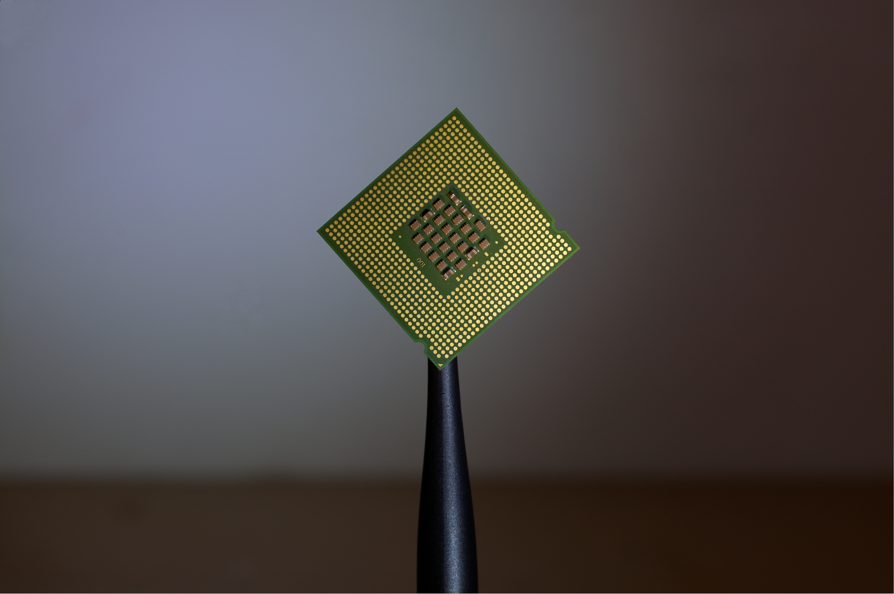

Working Memory
Creating Working Memory for autonomous systems

I am a PhD Student in Computer Science at Vanderbilt University. There are a lot of things that I like working on, but the most enjoyable things for me are Artificial Intelligence and Android Development. I spend most of my time working on different technical projects with different people in all kinds of fields like finance and fashion, and I love it. Most of the projects that I work on are shown below. The most important thing about what I do is that I enjoy doing it!
An integral function of fully autonomous robots and humans is the ability to focus attention on a few relevant percepts to reach a certain goal while disregarding irrelevant percepts. Humans and animals rely on the interactions between the Pre-Frontal Cortex (PFC) and the Basal Ganglia (BG) to achieve this focus called Working Memory (WM). The Working Memory Toolkit (WMtk) was developed based on a computational neuroscience model of this phenomenon with Temporal Difference (TD) Learning for autonomous systems. Recent adaptations of the toolkit either utilize Abstract Task Representations (ATRs) to solve Non-Observable (NO) tasks or storage of past input features to solve Partially-Observable (PO) tasks, but not both. We propose a new model, PONOWMtk, which combines both approaches, ATRs and input storage, with a static or dynamic number of ATRs. The results of our experiments show that PONOWMtk performs effectively for tasks that exhibit PO, NO, or both properties.
I am actively involved in several Android Development projects. Currently, I am working on creating the official Android app for my school with a team of other students, an app to help students get together and form study groups, an Augmented Reality app that allows users to try on clothes, and more.
My projects include Android, Web, Machine Learning, and Artificial Intelligence with more to come.
Creating Working Memory for autonomous systems

Using an ensemble of networks to predict stock prices with LSTM

Playground for working with different generative models
Cracking ciphers using generative networks

Simple neural network with a hidden layer from scratch
Using an ensemble of networks to classify fake news

Clone of Uber
Generating text with LSTM and Bi-Directional LSTM
Built a simple website using React and Django

App to help students studying abroad fit well

Website for a creative magazine
Augmented Reality app to try on clothes
Working to use temporal difference learning to create working memory for autonomous systems
Building the official Android app for MTSU with Kotlin and MVVM architecture
Leading a team of 10 people to work with Adaptive Technology Consulting for a VR driving system
Leading a team of 5 people to build a website for a student run creative magazine
Working with 4 people to create a large collection of networks to classify fake news
For as long as humans have participated in the act of communication, concealing information in those communicative mediums has manifested into an art of its own. Crytographic messages, through written language or images, are a means of concealment, usually reserved for highly sensitive or compromising information. Specifically, the field of Cryptography is the construction and analysis of protocols that prevent third parties from understanding private messages. Steganography is related to Cryptography in that the goal is to obscure information using some method or algorithm, but the most important difference is that the information and the method of concealing information within Steganography both involve images--more precisely, the embedding of one image or piece of information into another image. Ever since the creation of covert communication methods, steps have been taken to crack cryptography and steganography algorithms. The desire for this rises from both human curiosity and the need to counteract adverse uses, such as encoding harmful media in inconspicuous media (phishing attack). In this paper, we succeed in cracking the Least Significant Bit (LSB) steganography algorithm using Cycle Generative Adversarial Networks (CycleGANs) and Bayesian Optimization and compare the use of CycleGANs against Convolutional Autoencoders. The results of our experiments highlight the promising nature of CycleGANs in cracking steganography and open several possible avenues of research.
An integral function of fully autonomous robots and humans is the ability to focus attention on a few relevant percepts to reach a certain goal while disregarding irrelevant percepts. Humans and animals rely on the interactions between the PreFrontal Cortex (PFC) and the Basal Ganglia (BG) to achieve this focus called Working Memory (WM). The Working Memory Toolkit (WMtk) was developed based on a computational neuroscience model of this phenomenon with Temporal Difference (TD) Learning for autonomous systems. Recent adaptations of the toolkit either utilize Abstract Task Representations (ATRs) to solve Non-Observable (NO) tasks or storage of past input features to solve Partially-Observable (PO) tasks, but not both. We propose a new model, PONOWMtk, which combines both approaches, ATRs and input storage, with a static or dynamic number of ATRs. The results of our experiments show that PONOWMtk performs effectively for tasks that exhibit PO, NO, or both properties.
An integral function of fully autonomous robots and humans is the ability to focus attention on a few relevant percepts to reach a certain goal while disregarding irrelevant percepts. Humans and animals rely on the interactions between the PreFrontal Cortex and the Basal Ganglia to achieve this focus, which is known as working memory. The working memory toolkit (WMtk) was developed based on a computational neuroscience model of this phenomenon with the use of temporal difference learning for autonomous systems. Recent adaptations of the toolkit either utilize abstract task representations to solve non-observable tasks or storage of past input features to solve partially-observable tasks, but not both. We propose a new model, which combines both approaches to solve complex tasks with both Partially-Observable (PO) and Non-Observable (NO) components called PONOWMtk. The model learns when to store relevant cues in working memory as well as when to switch from one task representation to another based on external feedback. The results of our experiments show that PONOWMtk performs effectively for tasks that exhibit PO properties or NO properties or both.